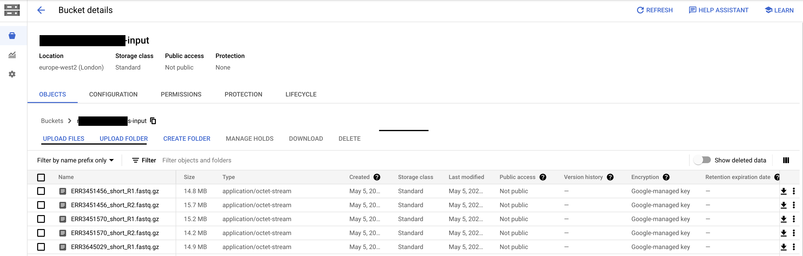

Moving data from HPC
Users can upload data to GCP storage buckets using a number of available methods:
GCP Console
Cloud Shell
CLI via Cloud SDK
GCP Console
For uploading smaller number of files users can start a GCP session, navigate to the relevant bucket in cloud storage and select the upload files/folder option:
This will allow you to upload files in $HOME directory on HPC
{kind=link}
Note
Your $HOME directory must be mapped to a network drive on your agency machine to use this method.
Cloud Shell
Users can also access the Cloud Shell on GCP and use the gsutil suite to upload data from their local machine (or a mapped drive) to a GCP bucket:
Uploading data from hpc-scratch
Cloud SDK
HPC users can use the pre-installed Google Cloud Software Development Toolkit (Cloud SDK) to transfer the data in bulk.
Cloud SDK, including gsutil tool, is pre-installed on hpc-scratch. The method for transferring files
Log on to hpc-scratch using your agency credentials
You will first need to add cloud SDK to your $PATH. Open your bash config file with nano ~/.bashrc and enter the following at the bottom of the file:
# updates PATH for the Google Cloud SDK:
if [ -f '/opt/google-cloud-sdk/path.bash.inc' ]; then . '/opt/google-cloud-sdk/path.bash.inc'; fi
# enables shell command completion for gcloud.
if [ -f '/opt/google-cloud-sdk/completion.bash.inc' ]; then . '/opt/google-cloud-sdk/completion.bash.inc'; fi
Save and exit the file. Run the following command in shell to update the environment:
# proxy server information stored here
$ source /etc/environment
# bash profile with gcloud SDK PATH
$ source ~/.bashrc
Test if gcloud has been added to $PATH
$ gcloud info
Initialise gcloud using below command. Select your project and region (europe-west2)
$ gcloud init --console-only
If target GCP bucket does not exist, create bucket
$ gsutil mb -l europe-west2 gs://{MY_BUCKET}
Run the following to copy data to your GCP bucket:
$ gsutil cp /PATH/TO/DATA/*.fastq.gz gs://{MY_BUCKET}
Note
You can use the -m option to run command (mv,cp, rsync) with multi-threading enabled: $gsutil cp -m /PATH/TO/DATA/*.fastq.gz gs://{MY_BUCKET}
Note
Be aware filesystem mount locations may differ between the HPC VMs: run $ df -h to identify mounted filesystems
Note
For some additional resources for transferring data check out cloud SDK initialization. and gsutil options.